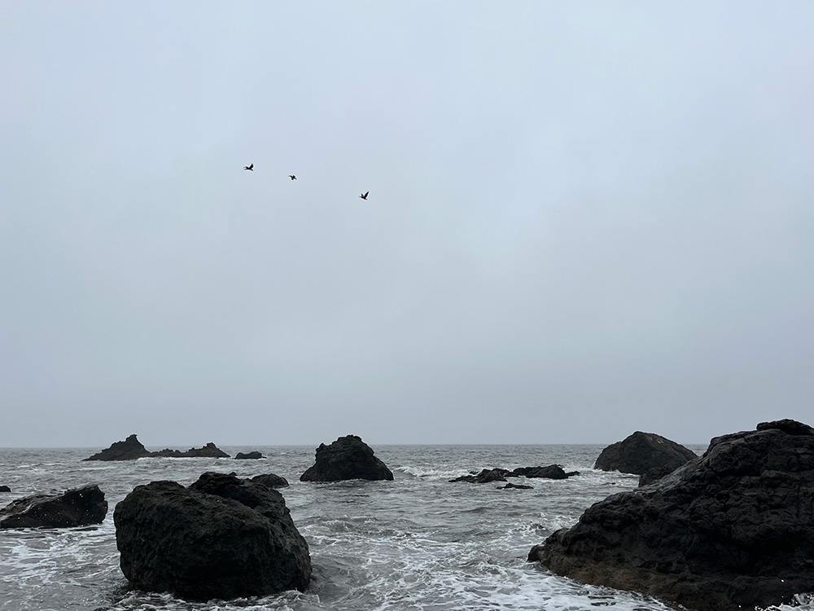

This image is my classmate’s merchandise collection from various franchises she likes. The layout and variety catches my eye, because there are many different sizes of items all laid out in a loose grid. I was also intrigued by the variation in texture, from the smooth paper to the fabric hat to the holographic plastic (and even the wooden table!). It’s quite obvious that this is merch of some sort, especially considering the Fanime Con lanyard in the corner—hinting that she might have acquired some of these at a convention. After looking at this, I was left wondering if this is her own personal collection, or if some of these items belonged to someone else. I also wondered how she got all of these items, how long it took to amass them, and what about these series stuck out to her so much that she wanted to buy merch.
While it’s an intriguing topic, I think it could be pushed deeper. She plans on describing each item and what franchise it’s from. I think that adding a narrative element into it could help make it more complex. For example, she could describe the story of how she got the item, or perhaps what time in her life the item aligned with and what it means to her. She could weave in themes of identity—given how dedicated she is to these fandoms—or find some other central theme to tie these items together in a more meaningful way.
Part Two: My Photo

Abby Wong, 2022
At first glance, this image just seems like a picture of the ocean—and it is. But it also inspired many of the songs that I create. I took this image in Half Moon Bay, and it is just one snapshot of the many visits to the coast I made growing up. I have always been so inspired by the contemplative, dark energy of the fog and the ocean when songwriting and producing. It’s why my artist name is Midsea.
In my project, I plan to showcase one such song: an ambient, ocean themed track titled la mer qui chante, which I produced using lush pads, haunting vocals, and layered foley effects to signify wind, waves and sand. I’d like to take the website visitor on a journey through the photo and use the song to support the atmosphere. I hope to guide the visitor to different elements of the oceanscape and simultaneously bring in corresponding foley layers in the audio.
To help smooth this out, I hope to add specific elements to the image: an old wooden ship, leaves blowing in the wind, maybe even some sand. I might draw these in as stylized line drawings to create a multimedia effect.
Entry 3 - Visual Thinking Strategies
Visual thinking is a critical skill not only for designers, but for everyone who can see. According to Michael Gonchar’s New York Times article, 10 Intriguing Photographs to Teach Close Reading and Visual Thinking Skills, visual thinking is the act of noticing, making connections, and asking questions. It helps people go beyond scratching the surface, and trades easy assumptions for more thoughtful, deep observations and hypotheses. It can also help people practice empathy, because in order to fully break down an image, one must assume a different point of view.
In order to explore ways I can help inspire visual thinking in others, I searched for a website that uses rich, interactive imagery that helps visitors engage with the graphic elements. The project RayBan.exe, an immersive marketing creation to promote Ray-Ban’s new sunglasses line, is a great example of this. Glitch effects modulate the graphics, playing into a futuristic and cyber aesthetic. Adding to the sci-fi worldbuilding, clickable text glitches into a jumble of characters when the user hovers over it. Additionally, the website designers use inlays to give the user a preview of expandable videos; a super engaging touch.
While the visual narrative is strong, though, the storytelling itself is based on a sci-fi cliche and may unfortunately be the reason this campaign didn’t take off in the way Ray-Ban probably hoped it would. I think that in order to inspire visual thinking in users effectively, the narrative that lies at its core should be able to stand on its own as well.
Entry 2 - Modals and Overlays
The first thing that stood out to me about Naema Baskanderi’s article on modal design, Best Practices for Modals / Overlays / Dialog Windows, is her warning to exercise caution. She doesn’t hesitate to mention that modals take users out of their regular flow and block interaction with the webpage’s primary content—something that can be both powerful when used with intent, and frustrating when used inappropriately.
She’s right to mention that users are quick to click out of modals, and this is why it’s so important to design them to retain user attention. I agree that modals should not have a scroll bar. To me, a scrollable modal suggests that the content is better off with its own page. I also liked her warning against using modals on mobile designs. The page is already small enough, so adding a modal would just waste valuable horizontal space.
One aspect I hadn’t thought of before is how low-vision users may increase their text size, which may increase the modal’s size beyond what is functional and accessible. It’s important to design modals that aren’t too large or small, in order to account for the variance in users’ browsers.
Entry 1 - Form Design
Good form design draws on human behavior and psychology to create intuitive, efficient forms that improve user retention. Well designed forms allow a user to swiftly move through it, and they minimize clicks (interaction costs) while maximizing understanding.
UX designer Salim Ansari has a great article (Best practices for form design) that goes into some of these strategies a little deeper. He emphasized keeping the flow of the form linear and showing the user roughly how much they have left if there are multiple pages. I would love to use this idea in my projects, because I find forms that seem to go on indefinitely (without telling me my progress) to be very frustrating.
I was surprised that he warned against using inline input field labels. I usually think that these look very clean, aesthetic-wise. However, he mentions that once a user starts typing in this field, they can no longer see the label. This makes reviewing the form at the end harder for the user. In my designs, I’ll have to weigh how much I value aesthetics vs. efficiency when designing elements like this.
An example of good form design
One of my best and easiest experiences filling out a form was the SNAP eligibility estimator from the Student Basic Needs Coalition. I love its clean design, clear information hierarchy, and progress bar at the top. The web designers also made sure to put labels outside of the form fields so users do not forget what category they are answering.